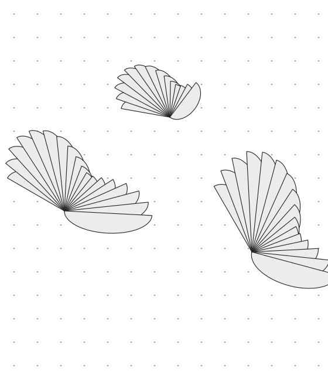
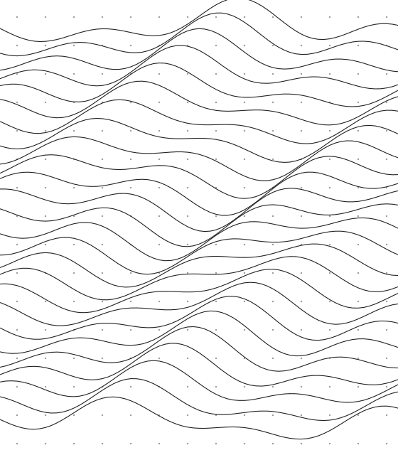
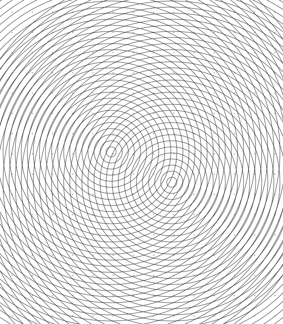

Project Timeline
Vibe Coded Tools for different use.
/ Projects
01 / 03

Project Compass
"Work in Progress" Create a strategic analysis of your project with local AI
GitHub ↗
Creative Generator
"Work in Progress" Use local AI to transfer an Image to an Generic animation
GitHub ↗
Portfolio
Take a look at my career
GitHub ↗Swipe · Trackpad · ← →